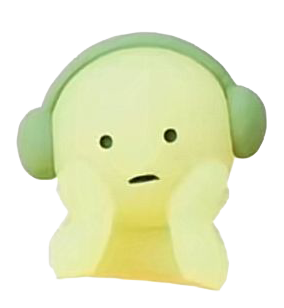
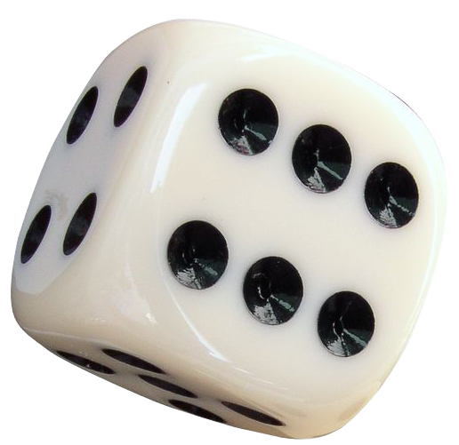
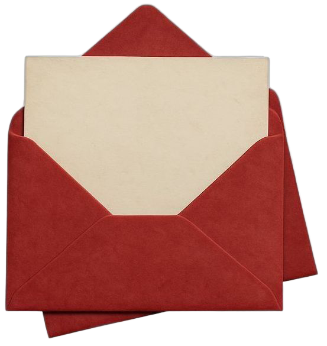
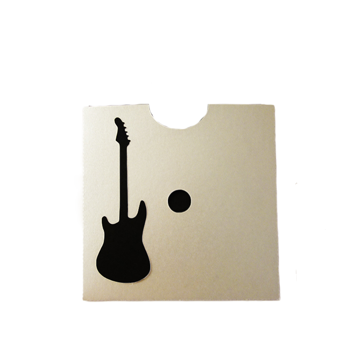
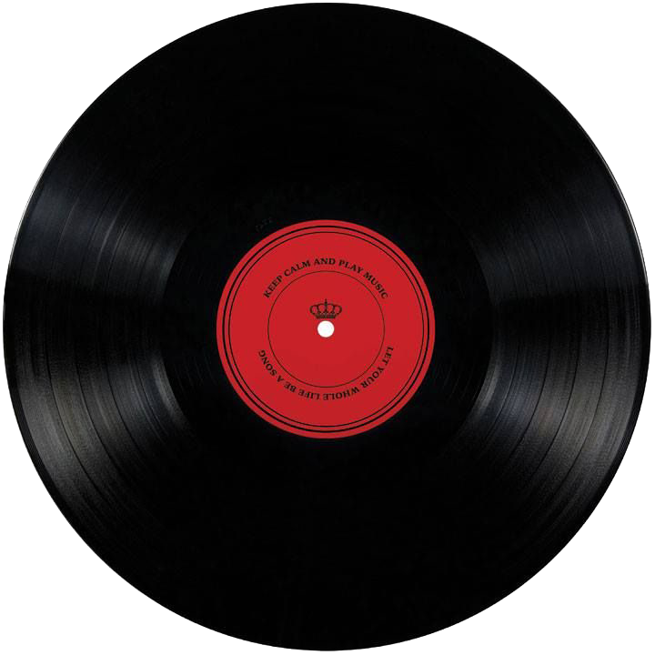

Portfolio













Je m’appelle Sara Desruels-Marciniak.
J’aime créer des projets qui se situent entre le design, l’image et le numérique. Je suis particulièrement attirée par les univers visuels qui ont une identité forte, les interfaces qui racontent quelque chose et les projets qui permettent d’expérimenter.
Je ne cherche pas seulement à faire quelque chose de « beau » : j’aime comprendre pourquoiun projet fonctionne, tester différentes idées, jouer avec les formes, les couleurs, la typographie et les interactions jusqu’à trouver la bonne direction.
Curieuse et toujours en train d’explorer de nouvelles choses, je passe facilement du graphisme à l’UI/UX, du développement à la direction artistique. Ce qui m’intéresse surtout, c’est de pouvoir apprendre, expérimenter et donner une vraie personnalité à ce que je crée.
Ce portfolio rassemble donc une partie de mes projets, mais surtout ma manière de chercher, d’expérimenter et de créer.
N’hésitez pas à me contacter pour échanger ou collaborer sur des projets créatifs !